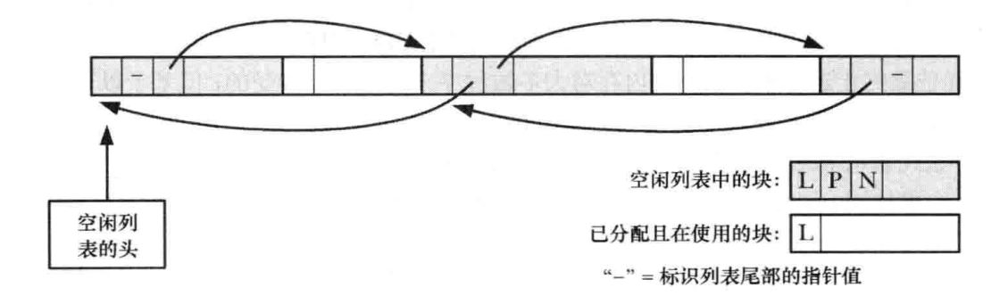

在堆上分配内存
进程可以通过增加堆的大小来分配内存
堆
- 是一段长度可变的连续细腻内存, 始于进程的未初始化数据段末尾, 随着内存的分配和释放而增减
- 通常将对的当前内存边界称为 "program break"
调整program break : brk()和sbrk()
改变堆的大小(即分配或释放内存), 最初, program break的位置位于未初始化数据段末尾, 如图:

在program break的位置抬升后, 程序可以访问新分配区域内的任何内存地址, 而此时屋里内存页还没有分配
- 内核会在进程首次试图访问这些虚拟内存地址时自动分配新的物理内存页
- 两个操作program break的系统调用: brk()和sbrk():
#include <unistd.h>
int brk(void * end_data_segment);
Returns 0 on success, or -1 on error
void *sbrk(intptr_t increment);
Returns previous program break on success, or (void *)-1 on error
- 系统调用brk()会将program break设置为参数end_data_segment所指定的位置, 由于内存页页为单位进行内存分配, end_data_segment实际会四舍五入到下个内存页的边界处
- 当试图将program break设置为一个低于其初始值得位置时, 可能会导致无法预知的行为, 例如:
- 当程序试图访问的数据位于初始化或未初始化数据段中当前尚不存在的部分时, 就会引发段内存访问错误(segentation fault)
- program break可以设定的精确上限取决于一些因素, 包括进程中对数据段大小的资源限制, 以及内存映射, 共享内存段, 共享库的位置等
- 调用sbrk()将program break在原有地址上增加从参数increment出入的大小, 用于声明increment的intptr_t类型属于整数数据类型
- 调用成功, sbrk()返回前一个program break的地址, 即如果program break增加, 那么返回值是指向这块新分配内存起始位置的指针
- 调用sbrk(0)将返回program break的当前位置, 对其不做改变, 再意图跟踪堆的大小, 或是见识内存分配函数包的行为时, 会用到这一用法
在堆上分配内存: malloc()和free()
- C程序使用malloc函数族在堆上分配和释放缓存, 脚趾brk()和sbrk(), 这些函数具备如下优点:
- 属于C语言标准的一部分
- 更易于在多线程程序中使用
- 接口简单, 允许分配小块内存
- 允许随意释放内存块, 它们被维护与一张空闲内存列表中, 在后续内存分配调用时循环使用
- malloc()函数在堆上分配size字节大小的内存, 并返回指向新分配内存其实位置处的指针, 其所分配的内存未经初始化
#include <stdlib.h>
void *malloc(size_t size);
Returns pointer to allocated memory on success, or NULL on error
- 由于malloc()的返回类型为void*, 因而可以将其赋给任意类型的C指针
- malloc()返回内存块所采用的字节对齐方式, 总是适宜于高效访问任何类型的C语言数据结构
- 在大多数硬件架构上, 这实际意味着malloc()是基于8字节或16字节边界来分配内存的
- 若无法分配内存, 则malloc()返回NULL, 并设置errno以返回错误信息, 虽然分配内存失败的可能性很小, 但所有对malloc以及后续体积的相关函数的调用都应对返回值进行错误检查
- free()函数释放ptr参数所指向的内存块, 该参数应该是之前由malloc(), 或者其他堆内存分配函数之一所返回的地址
#include <stdlib.h>
void free(void* ptr);
- 一般情况下, free()并不降低program break的位置, 而是讲这块内存添加到空闲内存列表中, 共后续的malloc()函数循环使用, 这么做的原因是:
- 被释放的内存块通常会位于堆的中间, 而非堆的顶部, 因为江都program break是不可能的
- 它最大限度地减少了程序必须执行的sbrk()调用次数
- 在大多数情况下, 降低program break的位置不会对那些分配大量内存的程序有多少帮助, 因为它们同城倾向于持有已分配内存或是反复释放和重新分配内存, 而非释放所有内存后再持续运行一段时间
- 如果传给free()的是一个空指针, 那么函数将什么都不做
- 在调用free()后对参数ptr的任何使用, 例如将其再次传递给free(), 将产生错误, 并可能导致不可预知的结果
程序示例
free()函数对program break的影响
#include "tlpi_hdr.h"
#define MAX_ALLOCS 1000000
int main(int argc, char *argv[])
{
char *ptr[MAX_ALLOCS];
int freeStep, freeMin, freeMax, blockSize, numAllocs, j;
printf("\n");
if(argc < 3 || strcmp(argv[1], "--help") == 0)
usageErr("%s mum_allocs block_size [step[min[max]]]\n", argv[0]);
numAllocs = getInt(argv[1], GN_GT_o, "num-allocs");
if(numAllocs > MAX_ALLOCS)
cmdLineErr("num-allocs > %d\n", MAX_ALLOCS);
blockSize = getInt(argv[2], GN_GT_o | GN_ANY_BASE, "block-size");
freeStep = (argc > 3) ? getInt(argv[3], GN_GT_o, "step") : 1;
freeMin = (argc > 4) ? getInt(argv[4], GN_GT_o, "min") : 1;
freeMax = (argc > 5) ? getInt(argv[5], GN_GT_o, "max") : numAllocs;
if(freeMax > numAllocs)
cmdLineErr("free-max > num-allocs\n");
printf("Initial program break: %10p\n", sbrk(0));
printf("Allocating %d*%d bytes\n", numAllocs, blockSize);
for(j = 0; j < numAllocs; j++)
{
ptr[j] = malloc(blockSize);
if(ptr[j] == NULL)
errExit("malloc");
}
printf("Program break is now: %10p\n", sbrk(0));
printf("Freeing blocks from %d to %d in steps of %d\n", freeMin, freeMax, freeStep);
for(j=freeMin - 1; j < freeMax; j += freeStep)
free(ptr[j]);
printf("After free(), program break is: %10p\n", sbrk(0));
exit(EXIT_SUCCESS);
}
- 改程序在分配了多块内存后, 根据命令行参数来释放其中的部分或全部
- 前两个命令行参数制定了分配内存块的数量和大小, 第三个命令行参数指定了释放内存块的循环步长, 如果是1, 那么城西将释放每块已分配的内存, 如果是2, 每隔一块释放一块已分配内存, 第四个和第五个命令行参数指定需要释放的内存块范围, 如果省略这两个参数, 那么将释放全部范围内的已分配内存
- 但是, 如果在堆顶部释放完整的一组连续内存块, 会观察到program break从峰值上降下来, 这表明free()使用了sbrk()来降低program break
- 在free()函数释放内存时, free()函数的glibc实现会在释放内存时将相邻的空间内存块合并为一整块更大的内存, 因而也有能力识别出堆顶部的整个空闲区域
- 仅当堆顶空闲内存足够大的时候, free()函数的glibc()实现会调用sbrk()来降低program break的地址, 至于足够与否则取决于malloc函数包行为的控制参数, 这减少了必须对sbrk()发起的调用次数
调用free()还是不调用free()
- 当进程终止时, 其占用的所有内存都会返还给操作系统, 对于那些分配了内存并在进程终止前持续使用的程序而言, 通常会省略对free()的调用
- 加入多次对free()的调用会消耗大量的CPU时间, 还会是代码更加复杂
- 但是, 最好在程序中显示释放所有已分配内存, 原因如下:
- 显示调用free()能使程序在未来修改时更具可读性和可维护性
- 如果使用malloc调试库来查找程序的内存泄露问题, 那么会将任何未经显示释放处理的内存报告为内存泄露, 这会是发现真正内存泄露的工作复杂化
malloc()和free()的实现
- 理解malloc()和free()的实现, 能使我们洞悉产生作物的原因以及如何避免此类错误
malloc实现 :
- 首先会扫描之前由free()所释放的空闲内存快列表, 以求找到尺寸大于或等于要求的一块空闲内存
- 如果这一块内存的尺寸正好与要求相当, 就把他直接返回给调用者
- 如果是一块较大的内存, 就将其分割, 将一块大小相当的内存返回给调用者, 较小的那块空闲内存保留在空闲列表中
- 如果空闲内存列表中没有足够大的空闲内存块, malloc()将会调用sbrk()已分配更多的内存, 为了减少sbrk()的调用次数, malloc会以虚拟内存页大小的数倍来增加program break, 并将超出部分至于空闲内存列表
free实现 :
- 为了知晓内存块的大小, malloc()分配内存快事, 会额外分配几个字节来存放记录这块内存大小的整数值, 该整数位于内存块的起始处, 儿实际返回给调用者的内存地址恰好位于这一长度记录字节之后
- 当其内存块置于空闲内存列表(双向链表)时, free()会使用内存块本身的空间来存放链表指针, 将自身添加到列表中
- 随着对内存不断的释放和重新分配, 空闲列表中的空闲内存会和已分配的在用内存混杂在一起

- C语言允许程序创建指向堆中任意位置的指针, 并修改其指向的数据, 包括由free()和malloc()函数维护的内存快长度, 指向前一空闲块和后一空闲块的指针
- 一旦推究起隐晦难解的编程缺陷来, 这将成为火药桶, 假设经由一个错误指针, 程序无意间增加了冠于一块已分配内存的长度值, 并随即释放这块内存, free()因之会在空闲列表中记录下这块长度失真的内存, 这将会导致这样一个场景: 程序的两个指针分别指向凉快它认为互不相干的已分配内存, 但实际上这两块内存却互相重叠, 导致程序逻辑错误
- 为避免这类错误, 应遵守以下规则:
- 分配一块内存后, 当小心谨慎, 不要改变这块内存范围外的任何内容, 错误的指针运算, 或者循环跟新内存块内容是出现的"off-by-one"错误, 都有可能导致这一情况
- 释放同一块已分配内存超过一次是错误的, Linux上的glibc库会报出分段错误
- 若非经由malloc函数包中函数所返回的指针, 不能再调用free()函数时使用
- 在编写需要长时间运行的程序时, 如果需要反复分配内存, 应当确保释放所有已使用完毕的内存, 不然, 堆将稳步增长, 直到抵达可用虚拟内存的上限, 在此之后分配内存的任何尝试都将以失败告终------->此乃传说中之 : 内存泄漏
malloc调试的工具和库
glibc提供了malloc调试库, 方便检测malloc缺陷, malloc挑水工局部分功能如下:
- mtrace()和muntrace()函数本别在程序中打开和关闭对内存分配调用进行跟踪的功能, 这些函数要与环境变量MALLOC_TRACE搭配使用, 该变量定义了写入跟踪信息的文件名, 被调用时, mtrace()会检查是否定义了该文件, 又是否可以打开文件并写入, 如果一切正常, 那么会在文件里跟踪和记录所有对malloc函数包中函数的调用, 由于生成文件不易于理解, 还提供了一个脚本用于分析文件, 并生成易于理解的汇总报告, 设置用户ID和设置组ID的程序会忽略mtrace()的调用
- mcheck()和mprobe()函数允许程序对已分配内存块进行一致性检查, 如:当程序试图在已分配内存之外进行写操作时, 他们将捕获这个错误.这些函数提供的功能和下厨malloc调试库有重叠之处, 使用这些函数的程序, 必须使用cc-lmcheck选项与mcheck库链接
- MALLOCCHECK环境变量提供了类似于mcheck()和mprobe()函数的功能, 通过为此变量设置不同的整数值, 可以控制程序对内存分配作物的响应方式:
- 0: 忽略错误
- 1: 在标准错误输出中打印诊断错误
- 2: 调用abort()来终止程序
- 并非所有的内存分配和释放错误都有MALLOCCHECK检测出的, 他说发现的只是常见错误, 但是, 这种技术快速易用, 较之于malloc调试库具有较低的运行时开销, 出于安全原因, 设置用户ID和设置组ID的程序将忽略MALLOCCHECK设置
就malloc调试库而言, 其提供了和标准malloc函数包相同的API, 但附加了捕获内存分配错误的功能, 要使用调试库, 需要在编译时链接调试库, 而非标准C函数库的malloc函数包
- 由于调试库通常会减低运行速度, 增加内存消耗, 或者两者兼而有之, 应当仅在调试时使用, 而在正式发布产品是链接标准库的malloc包
控制和检测malloc函数包
- glibc用于检测和控制malloc保重函数的内存分配的函数包括:
- 函数mallopt()能修改各项参数, 以控制malloc()所采用的算法, 如:
- 此类参数之一就制定了在调用sbrk()函数进行堆收缩之前
- 另一参数规定了从堆中分配的内存块大小的上限, 超出上限的内存块则使用mmao()系统调用来分配
- mallinfo()函数返回一个结构, 其中包含由malloc()分配内存的各种统计数据
在堆上分配内存的其他方法
calloc()和realloc()分配内存
#include <stdlib.h>
void *calloc(size-t numitems, size_t size);
Returns pointer to allocated memory on success, or NULL on error
- 参数numitems指定分配对象的数量, size指定每个对象的大小
- 在分配了适当大小的内存块后, calloc()返回指向这块内存起始处的指针
与malloc()不同, calloc()会将已分配的内存初始化为0
realloc()函数用来调整一块内存的大小, 而此块内存应该是之前由malloc保重函数所分配的
#include <stdlib.h>
void *realloc(void *ptr, size_t size);
Returns pointer to allocated memory on success, or NULL on error
- 参数ptr是指向需要调整大小的内存块的指针, 参数size指定所需调整大小的期望值
- 如果成功, realloc()返回指向大小调整后内存块的指针, 与调用前的指针相比, 二者指向的位置可能不同
- 如果发生错误, realloc()返回NULL, 对ptr指针指向的内存块则原封不动
- 若realloc()增加了已分配内存块的大小, 则不会对额外分配的字节进行初始化
- 使用calloc()或realloc()分配的内存应该用free()来释放
- 通常情况下, 当增大已分配内存时, realloc()会试图去合并在空闲列表中紧随其后且大小满足要求的内存块.
- 若原内存块位于堆的顶部, realloc()将对堆空间进行扩展, 如果这块内存位于堆的中部, 且紧随其后的空闲内存空间大小不足, realloc()会分配一块新内存, 并将原有数据复制到新内存块中, 一般情况下尽量避免掉用realloc()
- realloc()可能会移动内存, 对这块内存后续引用就必须使用realloc()的返回指针, 可以用realloc()来重新定位由变量ptr指向的内存块:
nptr = realloc(ptr, newsize);
if(nptr == NULL)
{
/*error*/
}
else
{
ptr = nptr;
}
- 由于realloc()可能会移动内存块, 任何指向该内存块内部的指针在调用realloc()之后都可能不在可用, 只有一指向此块内存起始处的指针加上一个偏移量来定位的内存块可用
分配对齐的内存: memalign()和posix_memalign()
- 函数memalign()和posix_memalign()可以在分配内存时, 该内存块的其实地址与2的整数次幂边界对齐, 该特征对于某些应用非常有用
#include <malloc.h>
void *memalign(size_t boundart, size_t size);
Returns pointer to allocated memory on success, or NULL on error
- memalign()分配size个字节的内存, 起始地址是参数boundary的整数倍, 儿boundary必须是2的整数次幂, 函数返回已分配内存的地址
- 函数memalign()并非在所有UNIX实现上都存在, 大多数需要应用
- posix_memalign()函数为标准规范函数:
#include <stdlib.h>
int posix_memealign(void **memptr, size_t alignment, size_t size);
Returns 0 on success, or a positive error number on error